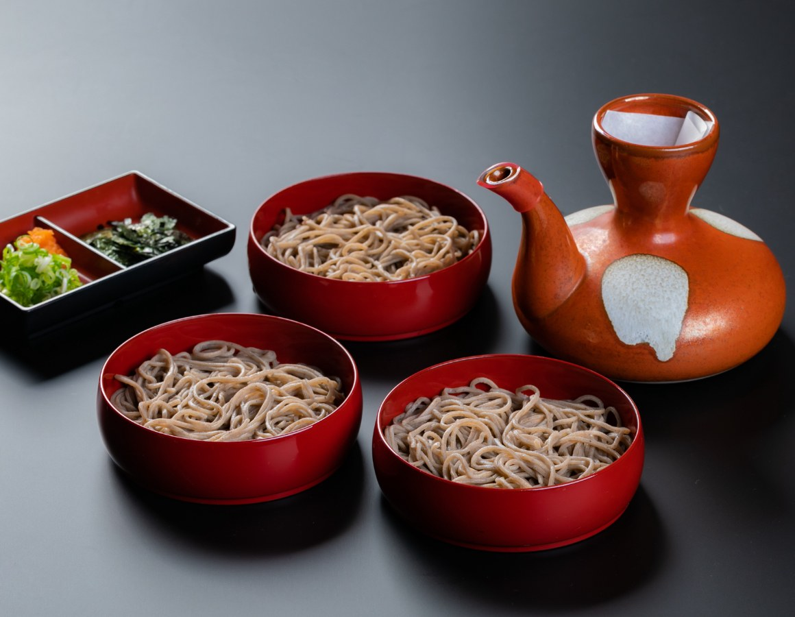
| 営業時間 | 11:00〜16:00（そばが無くなり次第終了）※出雲観光協会の掲載は11:00〜17:00となっており、公式サイトの16:00と食い違う |
|---|---|
| 定休日 | 水曜（祝日の場合は翌日） |
| 住所 | 島根県出雲市大社町杵築東409-2 |
| 予約 | 不可（先着順の案内） — ☎ 0853-53-2352 ／ 公式サイト |
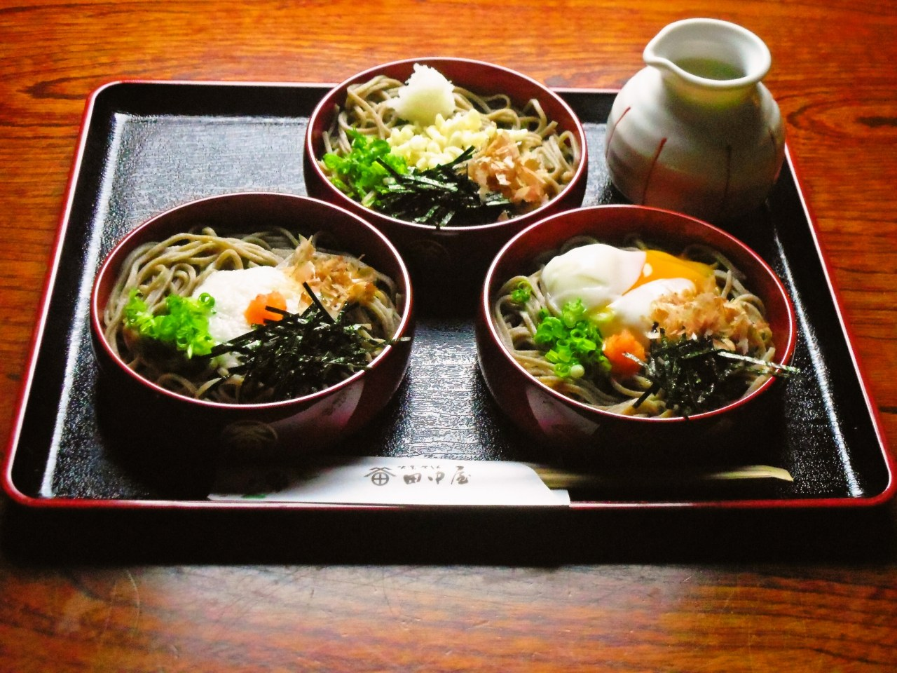
| 営業時間 | 11:00〜16:00（そばがなくなり次第終了） |
|---|---|
| 定休日 | 木曜 |
| 住所 | 島根県出雲市大社町杵築東364 |
| 予約 | 不可 — ☎ 0853-53-2351 ／ 公式サイト |
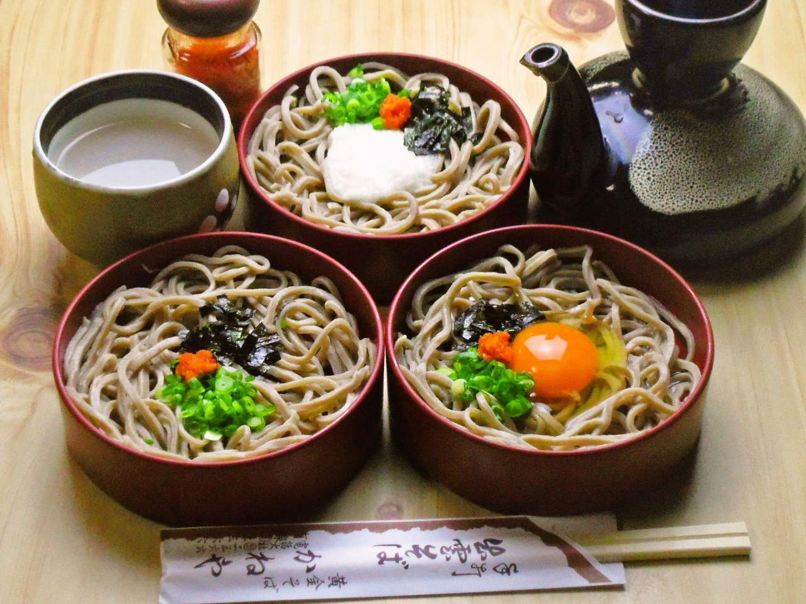
| 営業時間 | 10:30〜14:00（土・日は10:30〜14:30）※出雲観光協会の掲載。ホットペッパーグルメの掲載は9:30〜16:00で食い違う |
|---|---|
| 定休日 | 火曜・木曜・金曜（出雲観光協会の掲載。ホットペッパーグルメの掲載は「なし」） |
| 住所 | 島根県出雲市大社町杵築東四ツ角659 |
| 予約 | 不可 — ☎ 0853-53-2366 |
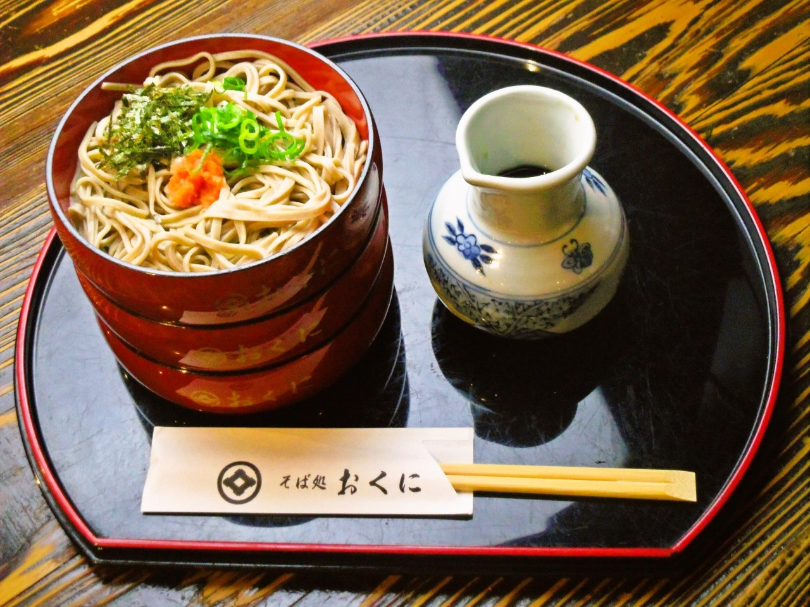
| 営業時間 | 8:00〜16:00（料理L.O.15:40・ドリンクL.O.16:00）※混み具合により15:30以降に閉める場合あり |
|---|---|
| 定休日 | 火曜（祝祭日は営業し振替休業あり） |
| 住所 | 島根県出雲市大社町杵築東宮内276 |
| 予約 | 不可 — ☎ 0853-53-5190 |
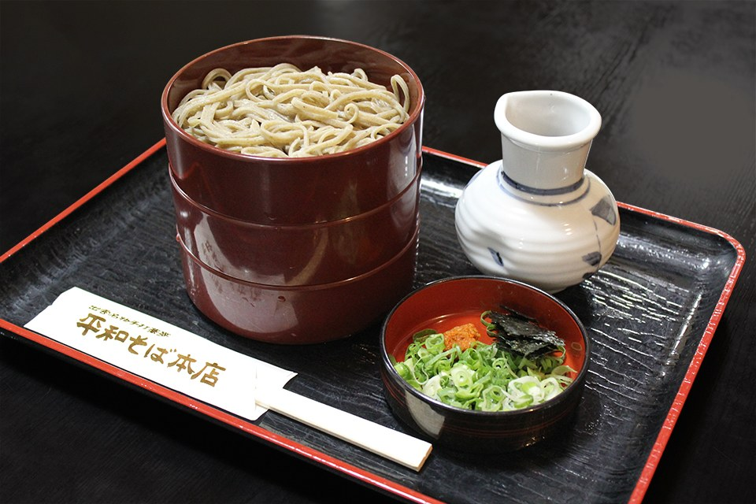
| 営業時間 | 11:00〜14:30（そばがなくなり次第終了） |
|---|---|
| 定休日 | 月曜・木曜（臨時休業あり。公式サイトの営業日カレンダーで要確認） |
| 住所 | 島根県出雲市大社町杵築西2034 |
| 予約 | 未確認 — ☎ 0853-53-3240 ／ 公式サイト |
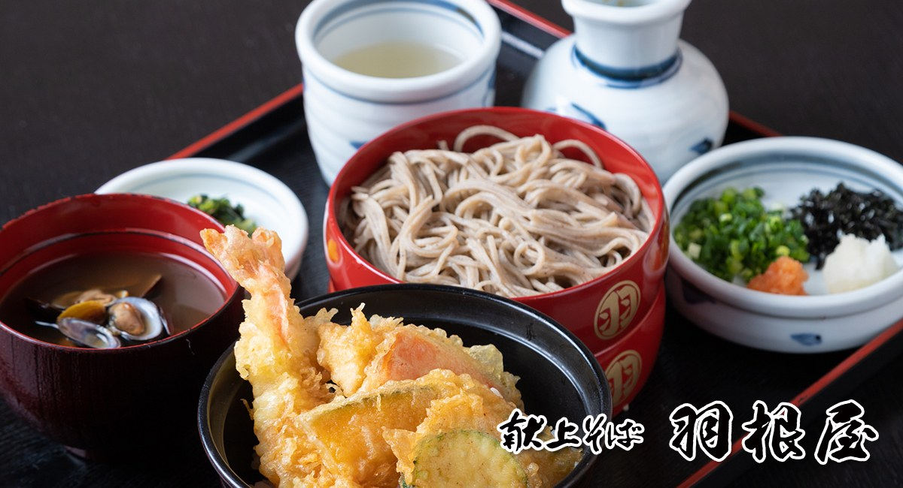
| 営業時間 | 11:00〜15:00（L.O.14:30）／17:00〜19:30（L.O.19:00）※そばがなくなり次第終了 |
|---|---|
| 定休日 | 元旦のみ（出雲観光協会の掲載は「なし」） |
| 住所 | 島根県出雲市今市町549 |
| 予約 | 一部可（公式確認のFAQでは平日のみ・席数限定で予約可） — ☎ 0853-21-0058 ／ 公式サイト |
| 営業時間 | 18:00〜24:00（L.O.23:30）※出雲観光協会の掲載。公式サイトは「夜18:00〜翌1:30」と記載しており食い違う |
|---|---|
| 定休日 | 日曜（日曜が祝祭日の場合は月曜） |
| 住所 | 島根県出雲市今市町駅通り905-18 |
| 予約 | 可（公式サイトに予約・問い合わせの案内あり） — ☎ 0853-24-2598 ／ 公式サイト |
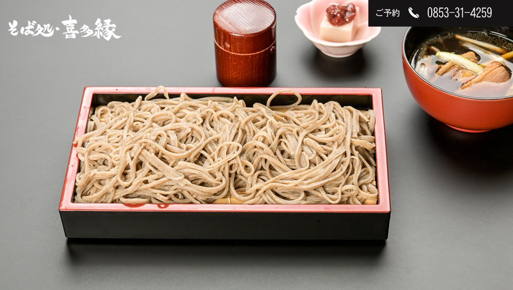
| 営業時間 | 11:30〜14:00／17:30〜20:00（月曜は昼のみ。水曜の夜はコース予約がある場合のみ営業） |
|---|---|
| 定休日 | 火曜（不定休あり） |
| 住所 | 島根県出雲市平田町989-4 |
| 予約 | 可（夜のコースは要予約。ホットペッパーグルメでネット予約も可） — ☎ 0853-31-4259 ／ 公式サイト |
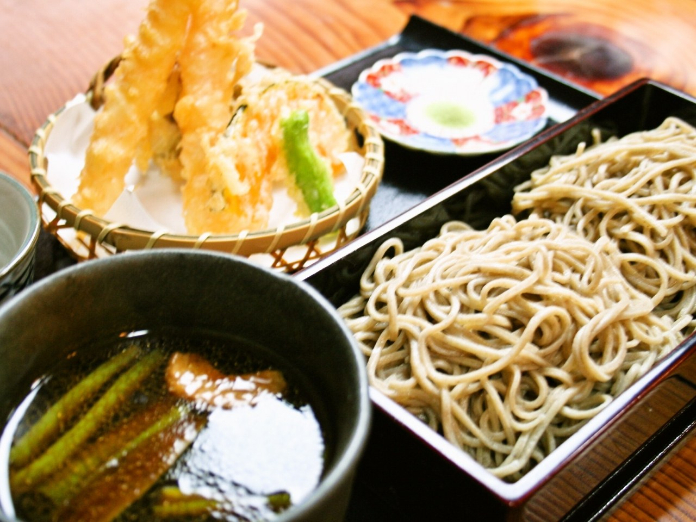
| 営業時間 | 11:30〜15:00／17:00〜20:00（売り切れ次第終了） |
|---|---|
| 定休日 | 月曜（月曜が祝日の場合は営業し翌火曜休み） |
| 住所 | 島根県出雲市常松町378 |
| 予約 | 一部可（ホットペッパーグルメ掲載。電話番号はサイト上で非表示のため未確認） |
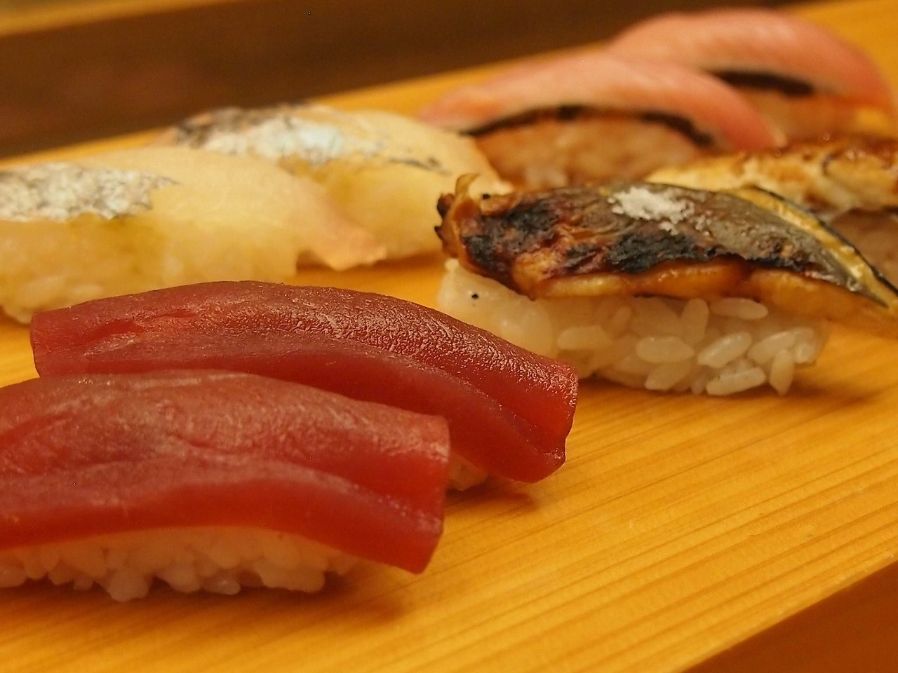
| 営業時間 | 昼 11:00〜13:30（料理L.O.13:00／2日前までの予約制・2名以上。日曜・水曜を除く）／夜 17:30〜21:30（料理L.O.21:00） |
|---|---|
| 定休日 | 日曜（日曜・月曜が連休のときは日曜に営業し、翌月曜が休み） |
| 住所 | 島根県出雲市今市町1458 |
| 予約 | 可（昼は2日前までの要予約・2名以上） |
| 営業時間 | 火〜日 11:00〜15:00（料理L.O.14:30）／祝日はこれに加えて 17:30〜21:00（料理L.O.20:30） |
|---|---|
| 定休日 | 月曜（月曜が祝日の場合は営業） |
| 住所 | 島根県出雲市今市町42-30 |
| 予約 | 可（ホットペッパーグルメからネット予約可） — ☎ 0853-21-6399 |
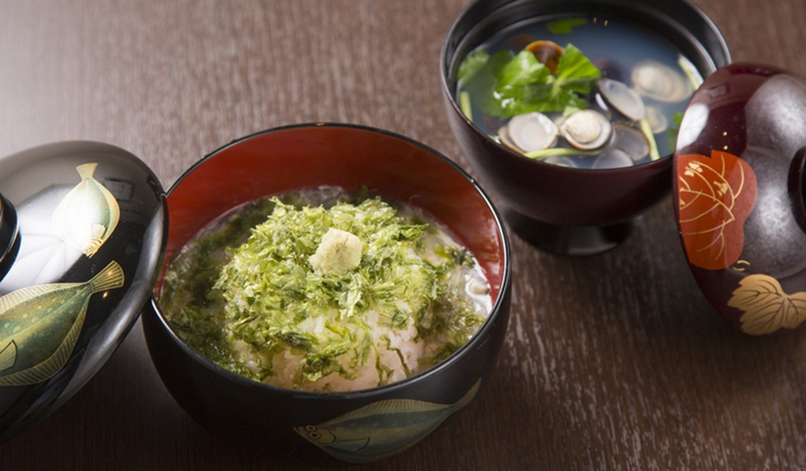
| 営業時間 | 11:30〜14:00／17:30〜21:00（L.O.20:00）※夜は要予約 |
|---|---|
| 定休日 | 不定休 |
| 住所 | 島根県出雲市大社町杵築東489-1 |
| 予約 | 可（夜と、松花堂膳・会席料理は要予約） — ☎ 0853-53-2017 ／ 公式サイト |
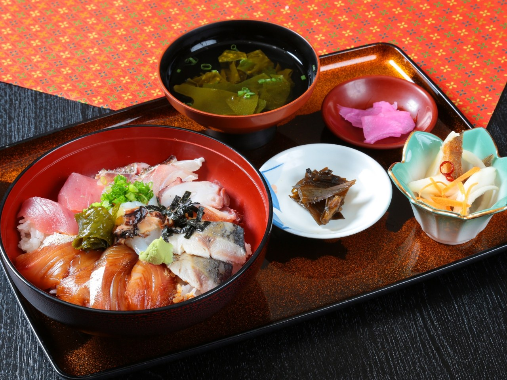
| 営業時間 | 11:00〜17:00（料理L.O.16:40）※出雲観光協会の掲載は10:00〜17:00 |
|---|---|
| 定休日 | なし |
| 住所 | 島根県出雲市大社町日御碕1089-48 |
| 予約 | 可（ホットペッパーグルメからネット予約可。2階の大広間・個室は予約した客のみ） — ☎ 0853-54-5211 |
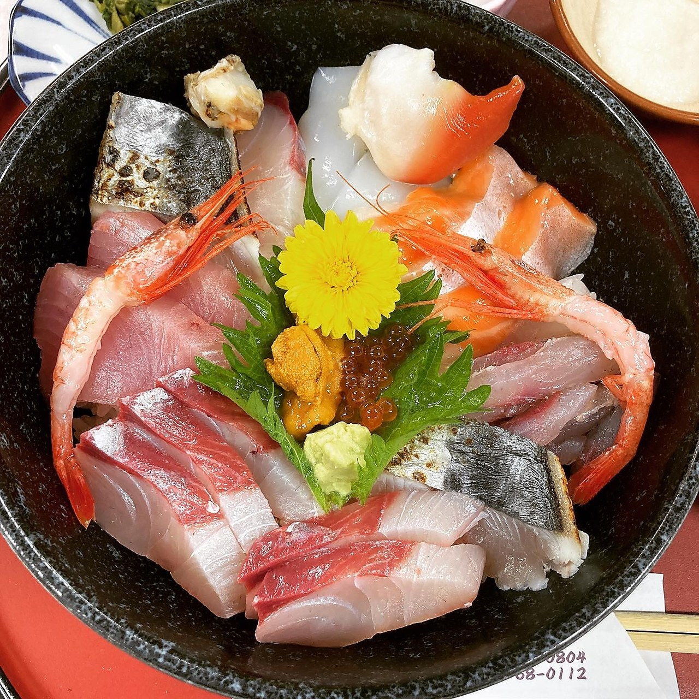
| 営業時間 | 11:00〜14:00（料理L.O.14:00）／17:00〜21:00（料理L.O.20:00、ドリンクL.O.21:00） |
|---|---|
| 定休日 | 不定休 |
| 住所 | 島根県出雲市小境町411-4 |
| 予約 | 可 — ☎ 0853-67-0804 ／ 公式サイト |
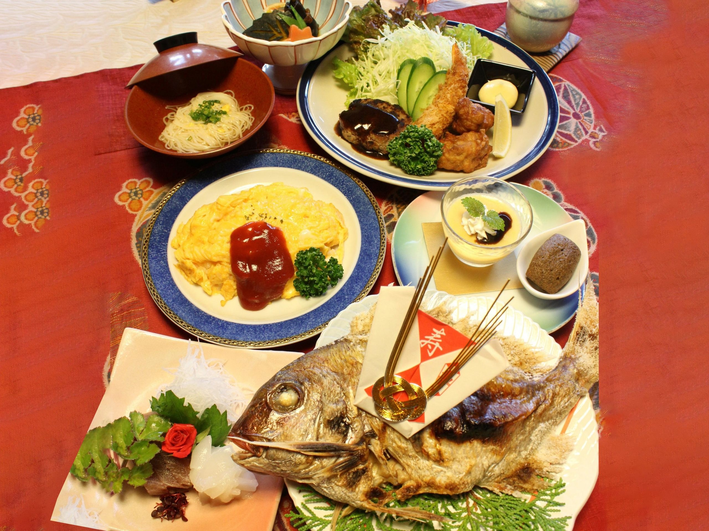
| 営業時間 | 昼 11:30〜14:00／夜 17:00〜21:30（会席コースのみ）※公式サイトに拠る。ホットペッパーグルメの掲載は夜17:00〜21:00。徳益庵のランチ営業は月・火・木・金で、3日前までに要予約 |
|---|---|
| 定休日 | 水曜（定休日でも予約・相談に応じると公式サイトに記載） |
| 住所 | 島根県出雲市大津町2063-11 |
| 予約 | 要予約（完全予約制） — ☎ 0853-21-2128 ／ 公式サイト |
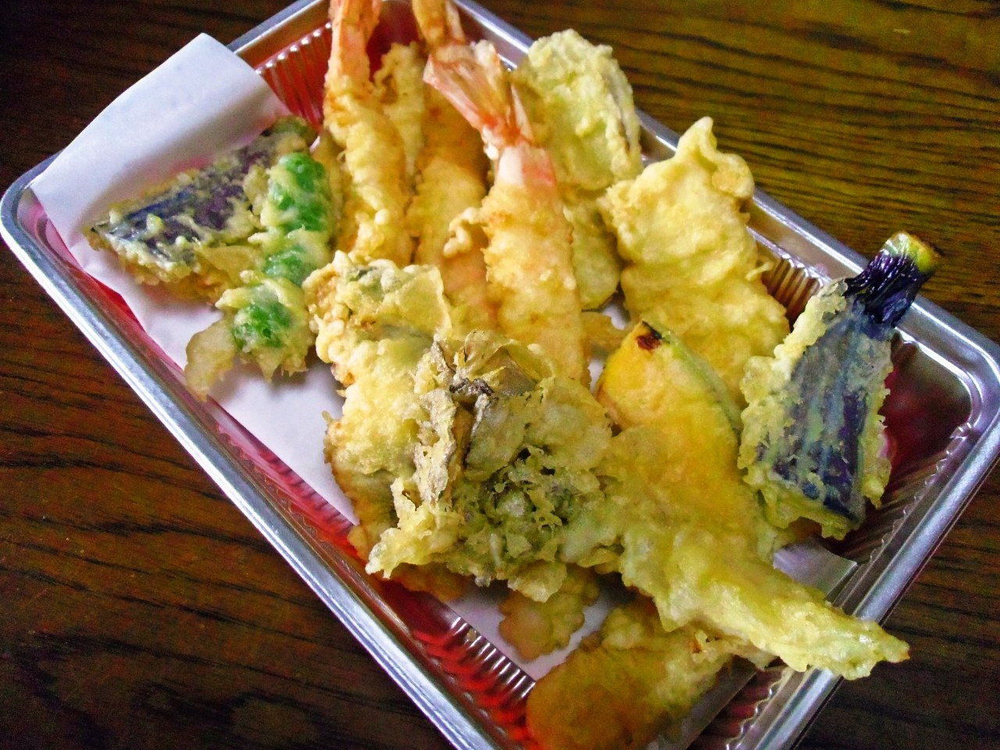
| 営業時間 | 11:30〜14:00（料理L.O.13:30）／17:30〜21:00（料理L.O.20:30） |
|---|---|
| 定休日 | 日曜・月曜 |
| 住所 | 島根県出雲市西新町3-2-1 |
| 予約 | 可 |
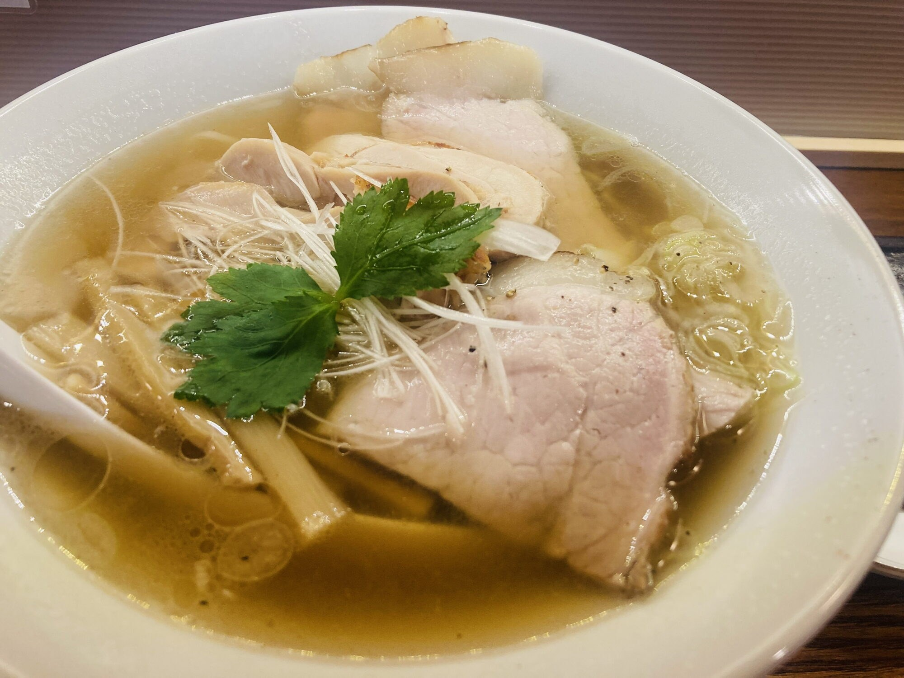
| 営業時間 | 10:00〜14:00(夜は同じ店舗が日本料理「味工房まつしま」として18:00〜22:00・要予約) |
|---|---|
| 定休日 | 火曜・水曜 |
| 住所 | 島根県出雲市今市町283-5 |
| 予約 | 昼のラーメン営業は不要(夜の「味工房まつしま」は要予約) — ☎ 0853-21-3290 |
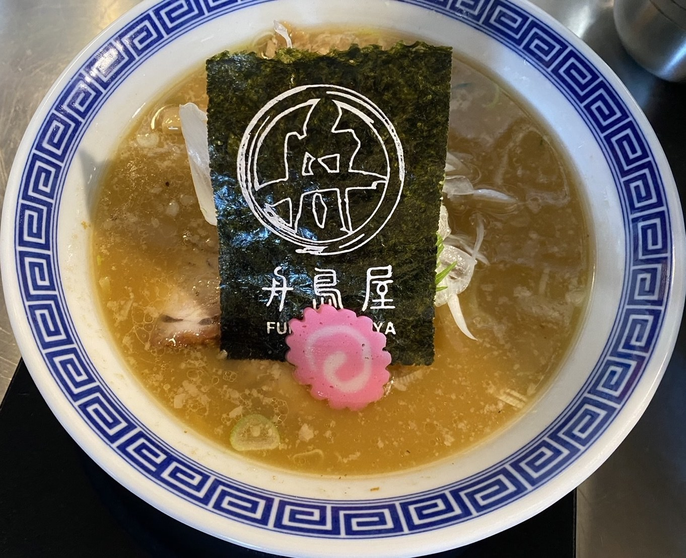
| 営業時間 | 11:00〜14:00／18:00〜22:00(料理L.O.21:00、飲み物L.O.21:30) |
|---|---|
| 定休日 | 日曜 |
| 住所 | 島根県出雲市姫原町156 |
| 予約 | 可(コース・宴会は要予約) — ☎ 0853-31-6870 |
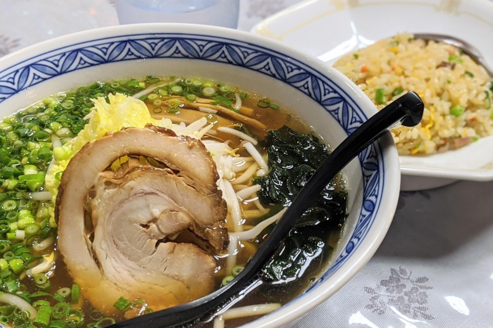
| 営業時間 | 11:30〜14:00／17:00〜21:00 |
|---|---|
| 定休日 | 月曜 |
| 住所 | 島根県出雲市渡橋町1220 |
| 予約 | 可 — ☎ 0853-22-3022 |
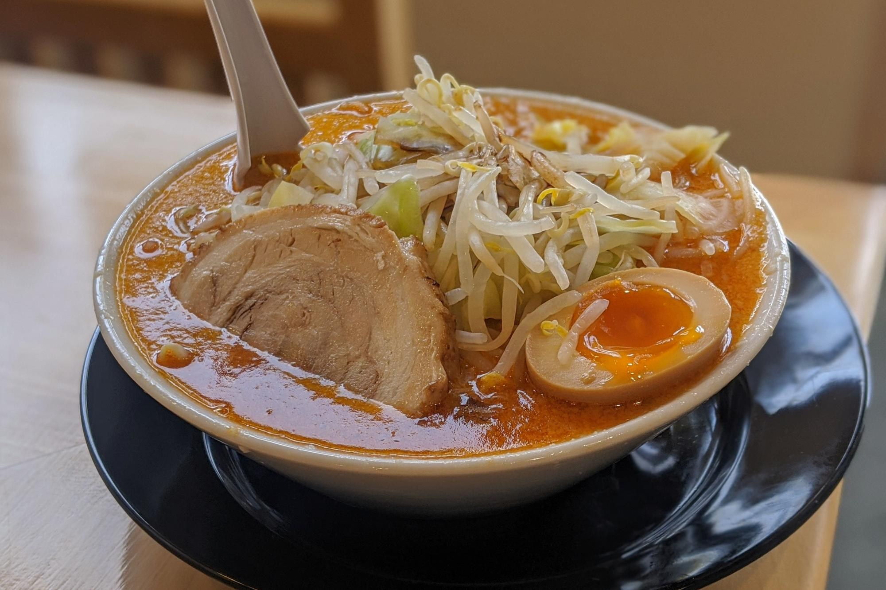
| 営業時間 | 11:00〜14:00／18:00〜19:30(土曜・日曜は昼のみ) |
|---|---|
| 定休日 | 水曜(ほかに不定休あり) |
| 住所 | 島根県出雲市平田町1825-10 |
| 予約 | 不要 — ☎ 0853-77-6107 |
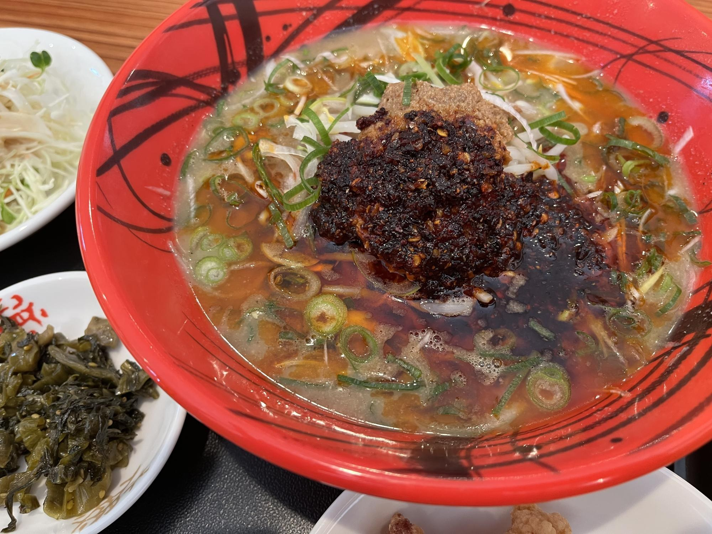
| 営業時間 | 11:00〜14:00／17:00〜21:00 |
|---|---|
| 定休日 | 金曜(※月曜休と記す情報もあり未確認) |
| 住所 | 島根県出雲市斐川町併川697 |
| 予約 | 未確認 — ☎ 0853-77-0615 |
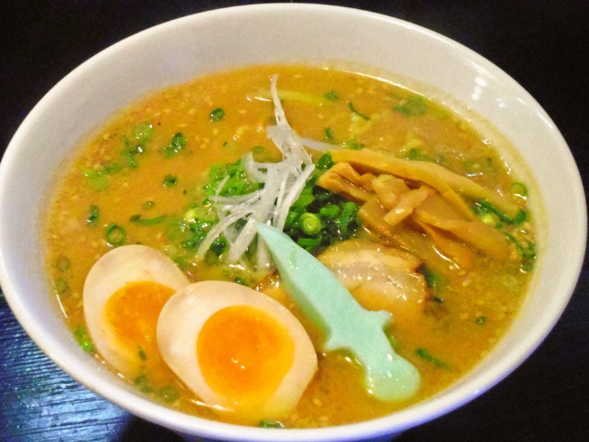
| 営業時間 | 11:00〜15:30(出雲観光協会の掲載は10:30〜15:30。16時まで延びる場合あり) |
|---|---|
| 定休日 | 不定休(ホットペッパーグルメの掲載は金曜) |
| 住所 | 島根県出雲市大社町杵築南780-10 |
| 予約 | 不要 — ☎ 0853-53-4445 |
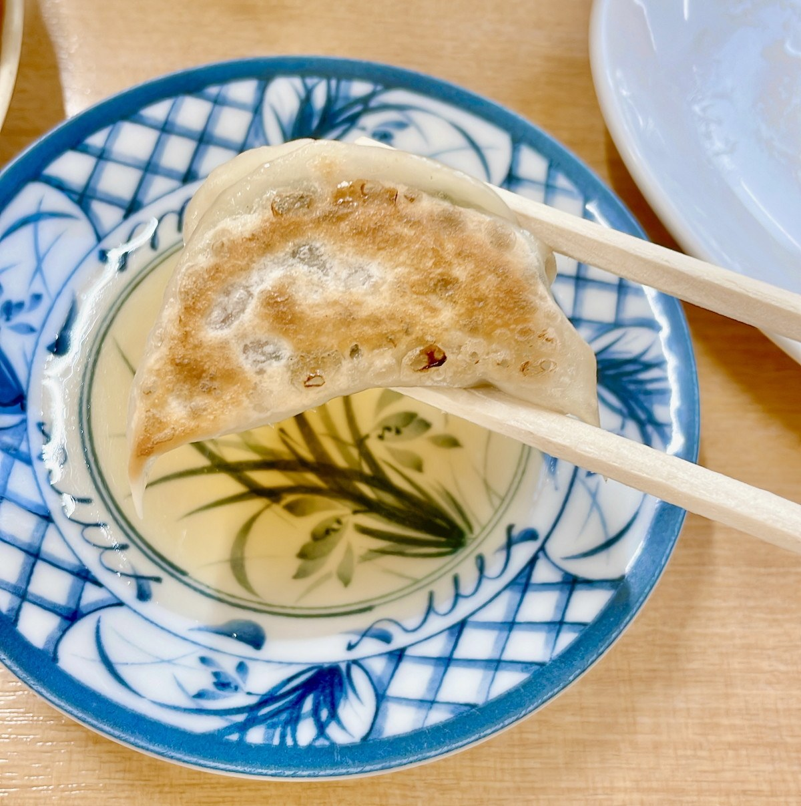
| 営業時間 | 17:00〜23:00(ホットペッパーグルメの掲載。地域情報サイトでは18:30頃の開店と紹介されており、来店前に要確認) |
|---|---|
| 定休日 | 日曜 |
| 住所 | 島根県出雲市今市町1268-6 |
| 予約 | 未確認 — ☎ 0853-22-5053 |
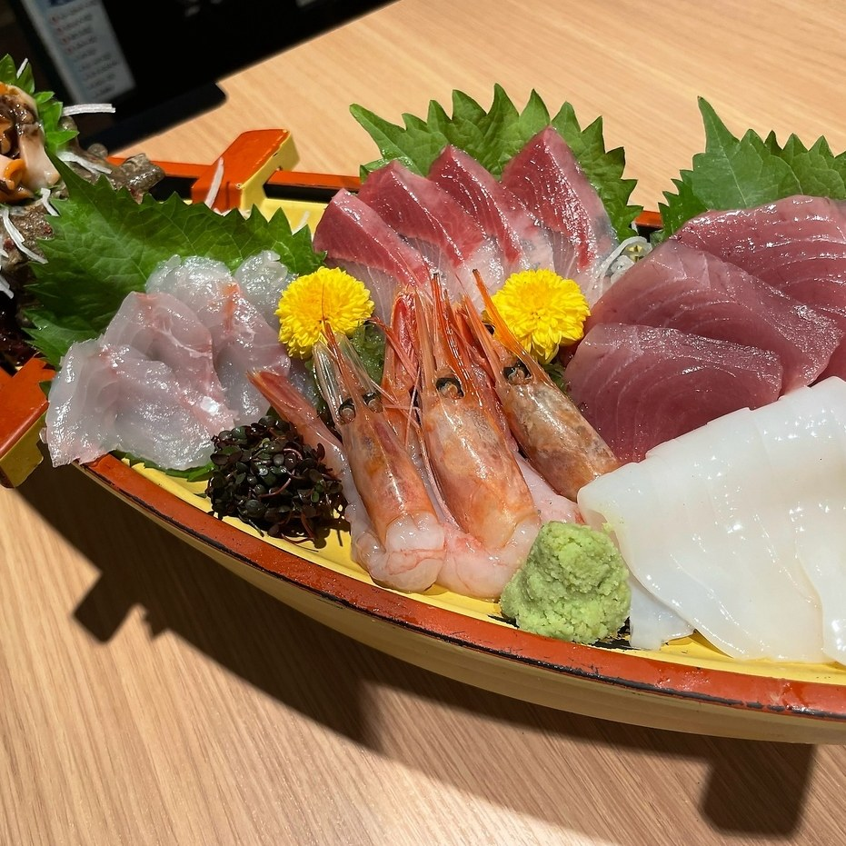
| 営業時間 | 月〜金 17:30〜翌0:00(料理L.O.23:00／ドリンクL.O.23:00)、土・祝日・祝前日 17:00〜翌0:00。土日は17:30開店になる場合あり |
|---|---|
| 定休日 | 日曜(日・月が連休の場合は月曜休み) |
| 住所 | 島根県出雲市今市町928-2 |
| 予約 | 可(ネット予約可) — ☎ 0853-24-3323 |
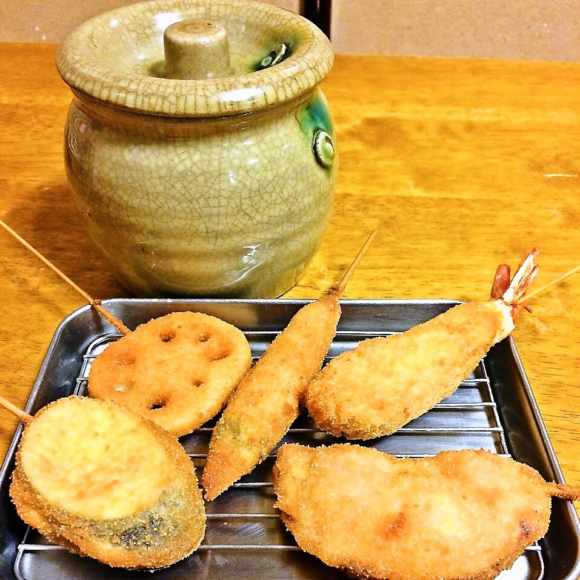
| 営業時間 | 月・水〜日 18:00〜23:00(料理L.O.23:00／ドリンクL.O.23:00) |
|---|---|
| 定休日 | 火曜 |
| 住所 | 島根県出雲市今市町827-23 |
| 予約 | 可(当日予約も受付。ネット予約可) — ☎ 0853-24-2900 |
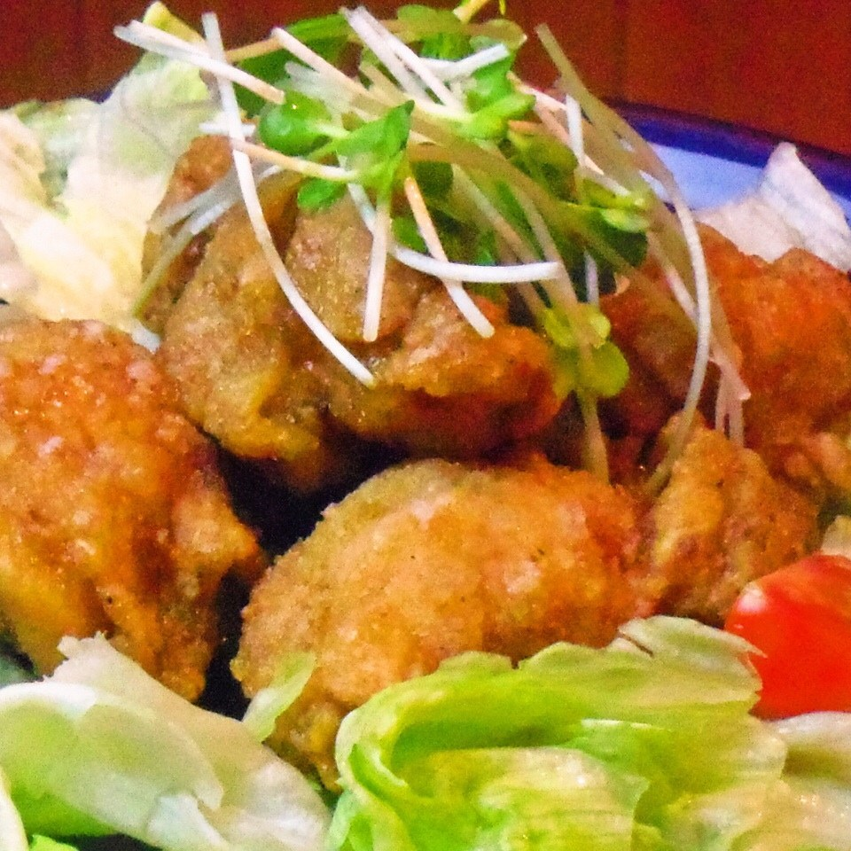
| 営業時間 | 月〜土・祝日・祝前日 18:30〜翌3:00(料理L.O.翌2:00／ドリンクL.O.翌2:00) |
|---|---|
| 定休日 | 日曜 |
| 住所 | 島根県出雲市今市町1265 |
| 予約 | 可(15名から貸切も相談可) — ☎ 0853-23-7424 |
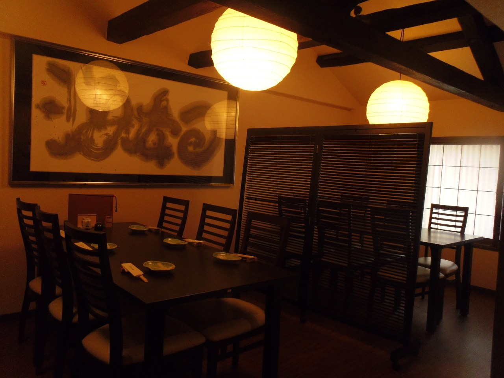
| 営業時間 | 月〜日・祝日・祝前日 16:30〜22:30(料理L.O.22:00／ドリンクL.O.22:00) |
|---|---|
| 定休日 | 不定休 |
| 住所 | 島根県出雲市今市町1271-5 |
| 予約 | 可(電話) — ☎ 0853-21-8686 |
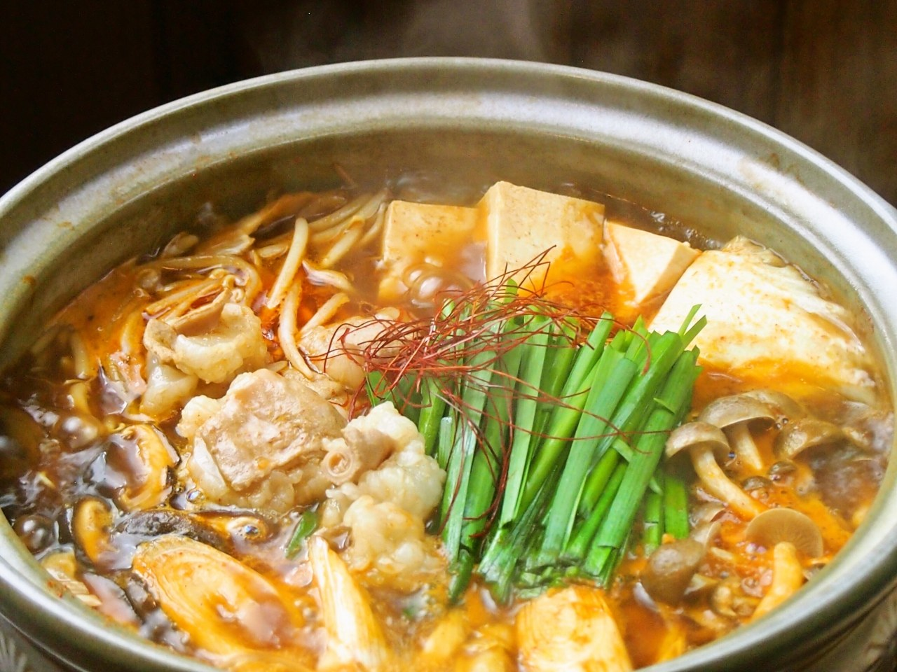
| 営業時間 | 月〜日・祝日・祝前日 15:00〜22:00(料理L.O.21:30／ドリンクL.O.22:00) |
|---|---|
| 定休日 | 12月31日〜1月2日のみ休み |
| 住所 | 島根県出雲市今市町651 |
| 予約 | 可(貸切は52名まで) |
| 営業時間 | 火〜日 昼12:00〜13:30、夜18:00〜22:30(na-naの記事では夜18:00〜22:00・金曜は19:00〜、日曜13:00〜20:00。変動があるため要確認) |
|---|---|
| 定休日 | 月曜(祝日の場合は営業、翌日休み) |
| 住所 | 島根県出雲市今市町120-2 |
| 予約 | 可(カウンター中心で席数が少ないため要確認) — ☎ 0853-30-1909 |
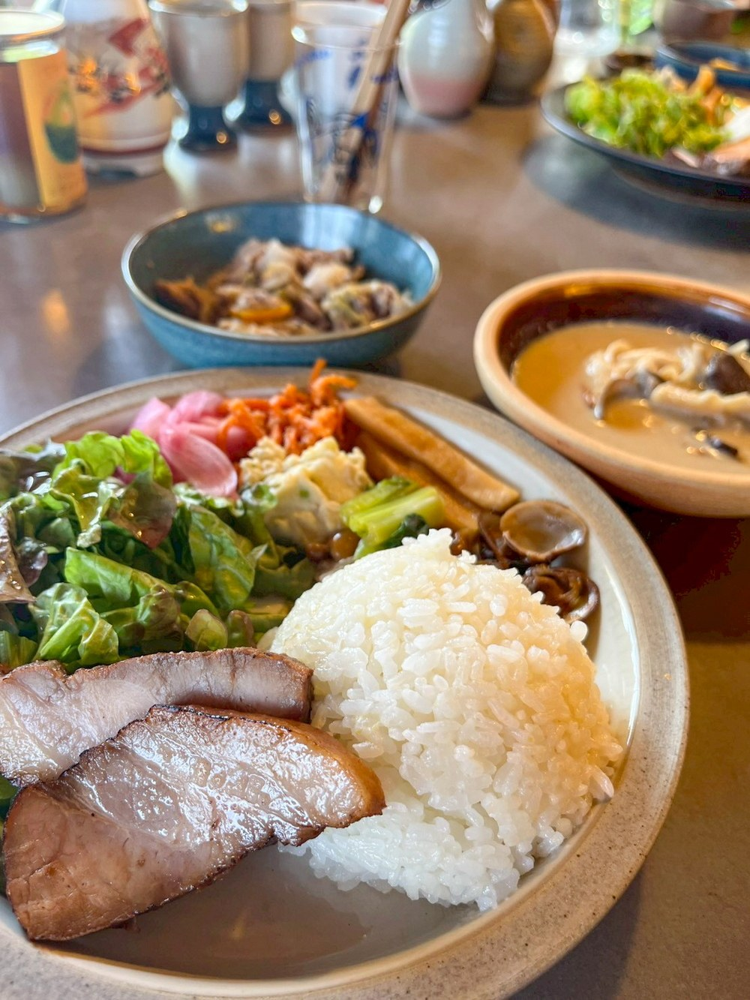
| 営業時間 | 11:00〜15:00(ランチ)。酒の提供もあるが夜の営業時間は未確認・要予約 |
|---|---|
| 定休日 | 火・水・木 |
| 住所 | 島根県出雲市大津町781 |
| 予約 | 要予約(予約が推奨されている) — ☎ 050-1724-2414 |
| 営業時間 | 月・火・木・金・土・日 17:30〜23:00(L.O.22:00) |
|---|---|
| 定休日 | 水曜(月・火・木が祝日の場合は休みになることがある) |
| 住所 | 島根県出雲市平田町中本町1101 |
| 予約 | 可(座敷をつなげて最大20名まで) |
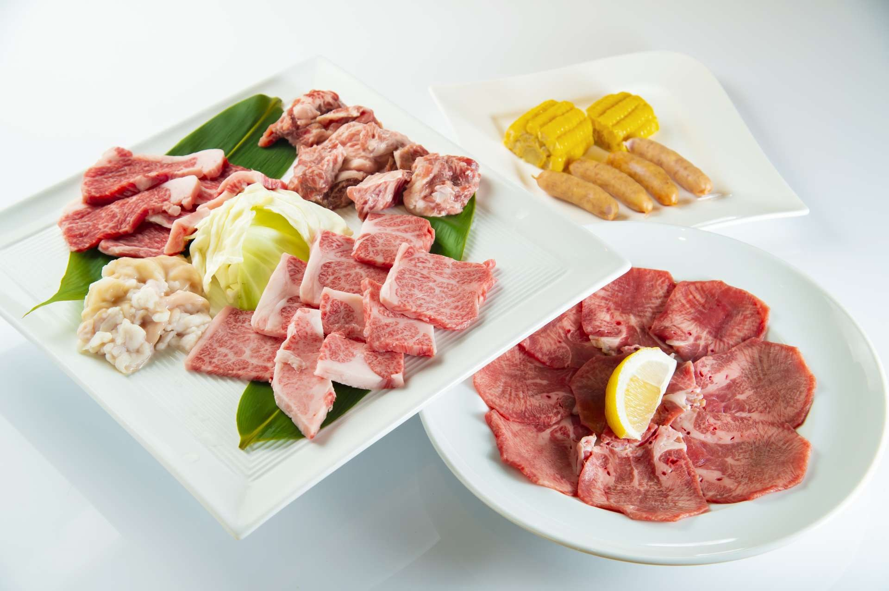
| 営業時間 | 11:30〜14:00(入店13:00まで) / 17:30〜22:00 |
|---|---|
| 定休日 | 毎週木曜日 |
| 住所 | 島根県出雲市大社町杵築南1386-2 |
| 予約 | 可(電話またはウェブ予約) — ☎ 0853-53-3749 ／ 公式サイト |
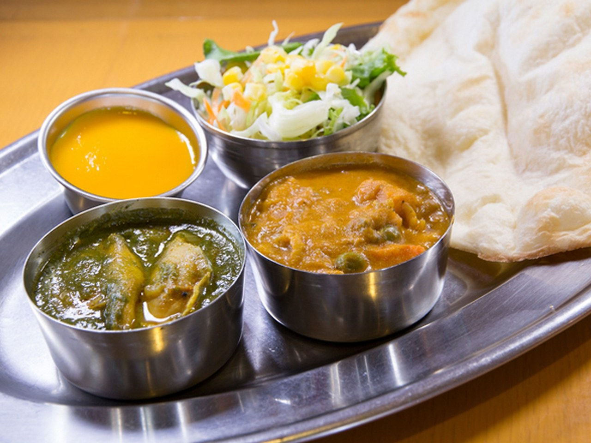
| 営業時間 | 11:00〜15:00(料理L.O.15:00) / 17:00〜22:00(料理L.O.22:00) |
|---|---|
| 定休日 | なし |
| 住所 | 島根県出雲市塩冶有原町1-14-1 |
| 予約 | 可(25名以上は貸切可) |
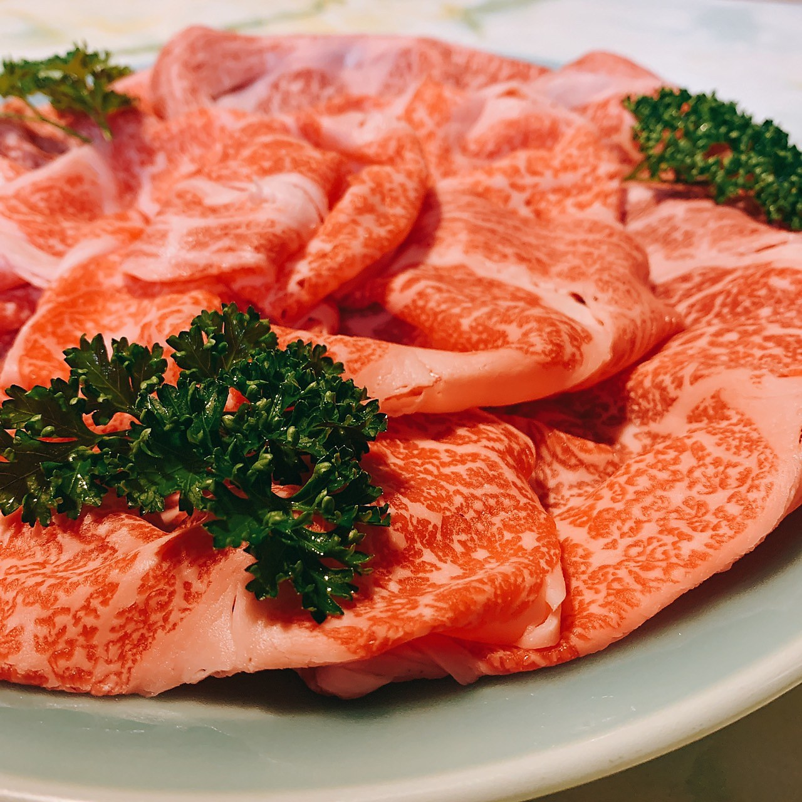
| 営業時間 | 17:30〜22:00(料理L.O.21:30 ドリンクL.O.21:30) |
|---|---|
| 定休日 | 月曜日 |
| 住所 | 島根県出雲市斐川町直江5310 |
| 予約 | 可(電話・ネット予約。宴会・貸切も相談可) — ☎ 0853-72-2364 |
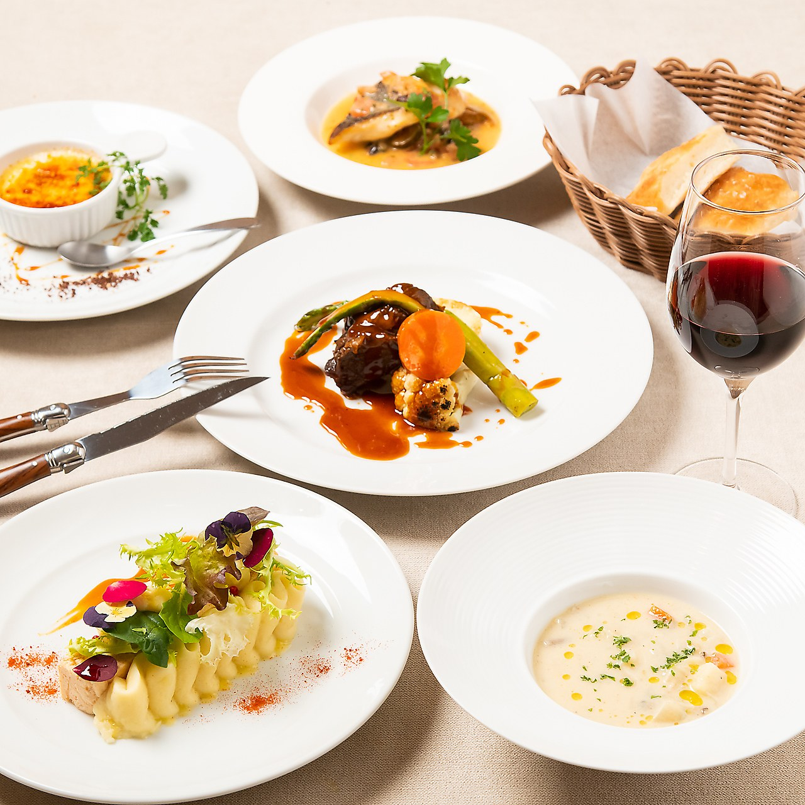
| 営業時間 | 平日 9:00〜17:00(モーニング9:00〜11:00 / ランチ11:00〜14:00 / カフェ14:00〜16:30、L.O.16:30) ・ 土日祝 8:30〜17:00。夜はディナーコースと18:00〜のアフタヌーンティーの予約がある日のみ |
|---|---|
| 定休日 | 水曜日(火曜日は夜のみ休み) |
| 住所 | 島根県出雲市今市町扇町890 |
| 予約 | 可(コース・アフタヌーンティーは2日前までに要予約) — ☎ 0853-31-5033 ／ 公式サイト |
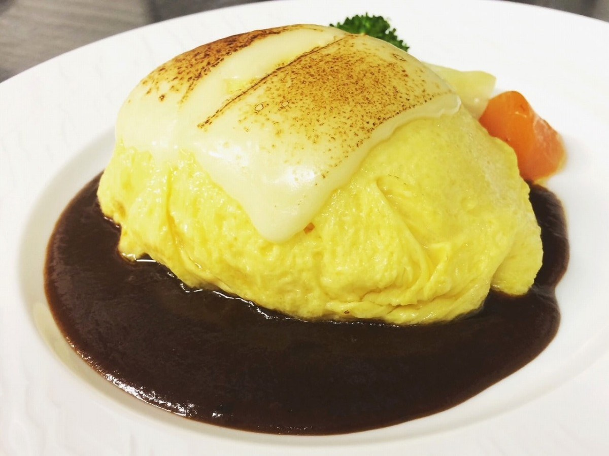
| 営業時間 | 11:00〜21:00(L.O.20:00) ※ランチは11:00〜14:30(L.O.14:00) |
|---|---|
| 定休日 | 月曜日 |
| 住所 | 島根県出雲市大津朝倉3-7-1 朝倉テナントビル1階 |
| 予約 | 一部可(電話受付。ランチの予約は6名以上のみ) — ☎ 0853-21-2770 ／ 公式サイト |
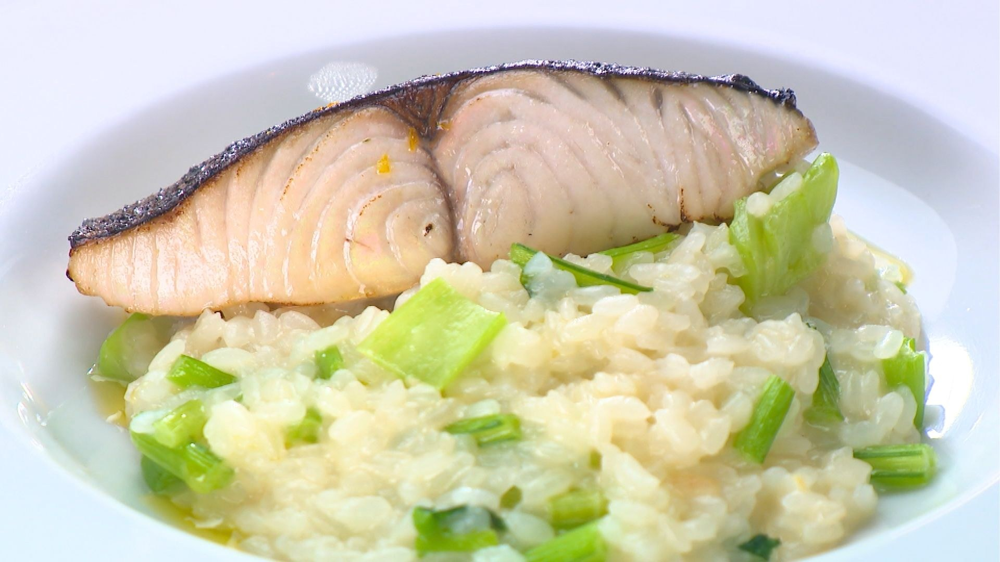
| 営業時間 | 11:30〜15:00 / 17:00〜22:00(夜は要予約) |
|---|---|
| 定休日 | 火曜日 |
| 住所 | 島根県出雲市平田町814 |
| 予約 | 可(夜は要予約。昼もできるだけ予約) — ☎ 0853-27-9424 ／ 公式サイト |
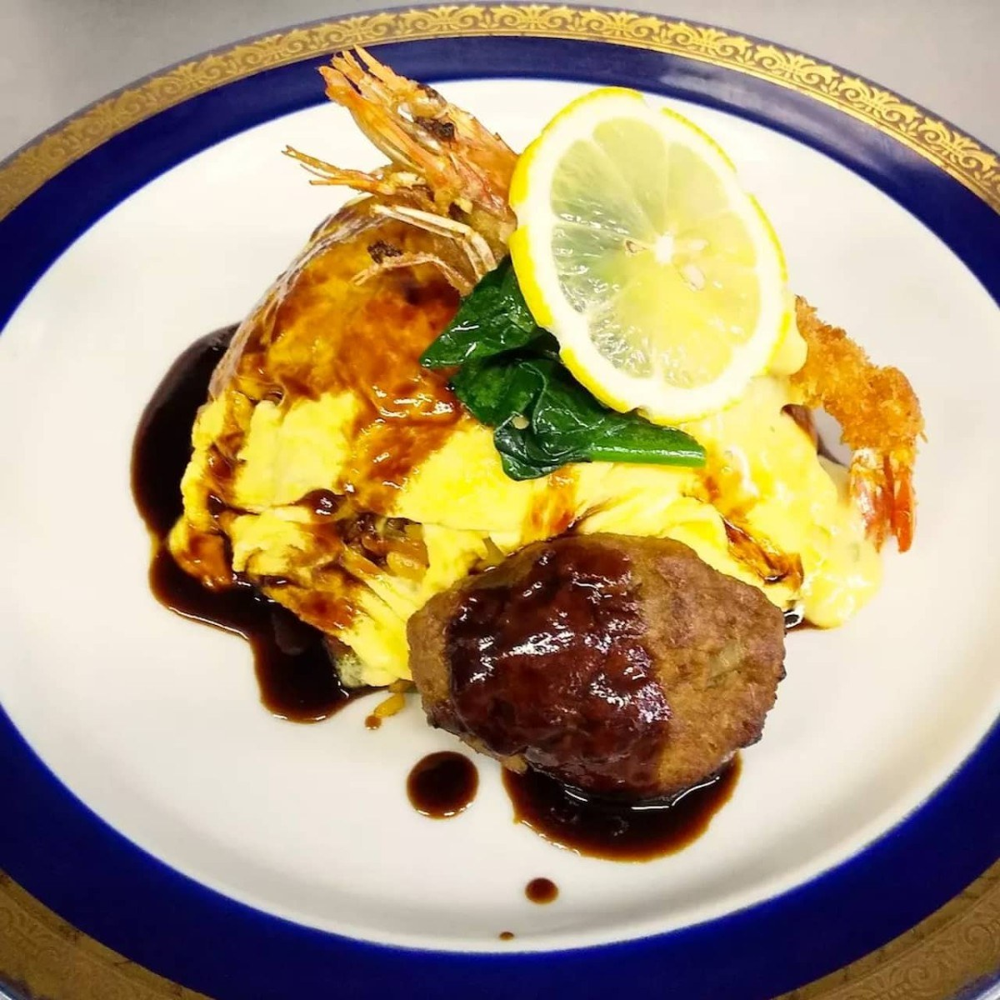
| 営業時間 | 11:30〜14:00 / 17:30〜20:00 |
|---|---|
| 定休日 | 木曜日 |
| 住所 | 島根県出雲市塩冶有原町4-65-2 |
| 予約 | 一部可(夜のディナーコースは3日前までに要予約) — ☎ 0853-21-5569 ／ 公式サイト |
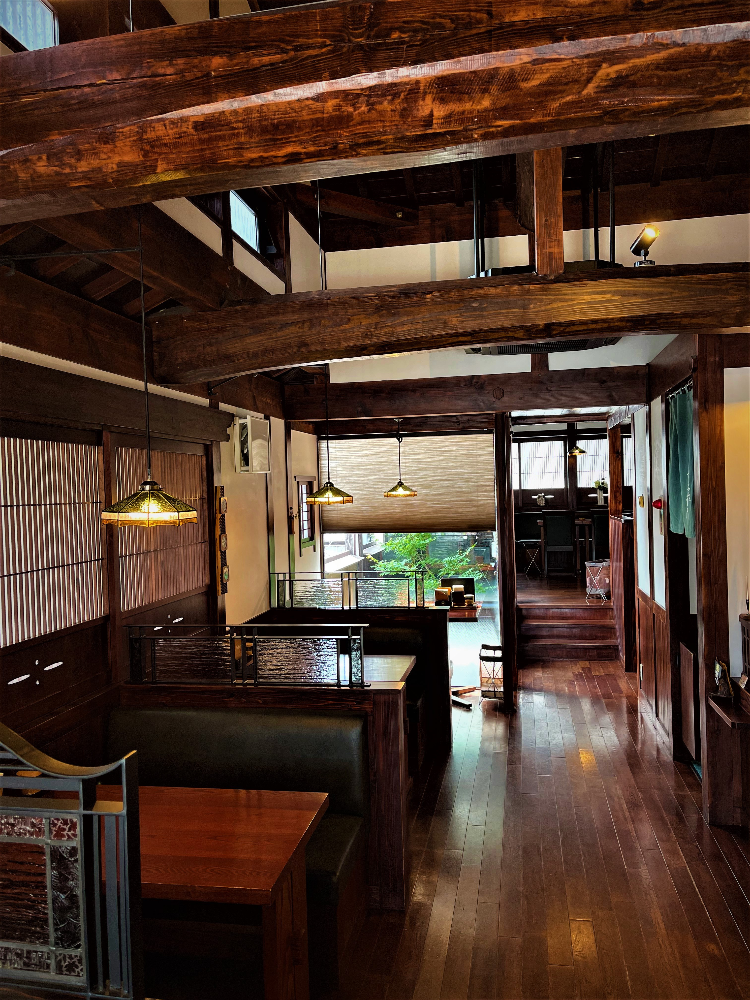
| 営業時間 | 11:00〜17:00(ラストオーダー16:30) |
|---|---|
| 定休日 | 水曜・木曜(ほか臨時休業あり) |
| 住所 | 島根県出雲市大社町杵築南839-1 |
| 予約 | 一部可(有料特別席のみ予約可。通常席は予約不可) — ☎ 0853-25-8120 ／ 公式サイト |
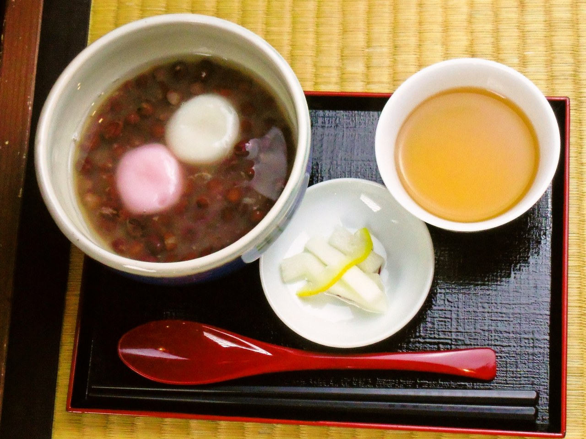
| 営業時間 | 9:00〜18:00(夏季)／9:00〜17:00(冬季) |
|---|---|
| 定休日 | 不定休 |
| 住所 | 島根県出雲市大社町杵築南840-1 ご縁横丁 |
| 予約 | 不可(公式サイトに「出雲ぜんざい餅(大社店)では事前のご予約は承っておりません」と明記) — ☎ 0853-24-0011 ／ 公式サイト |
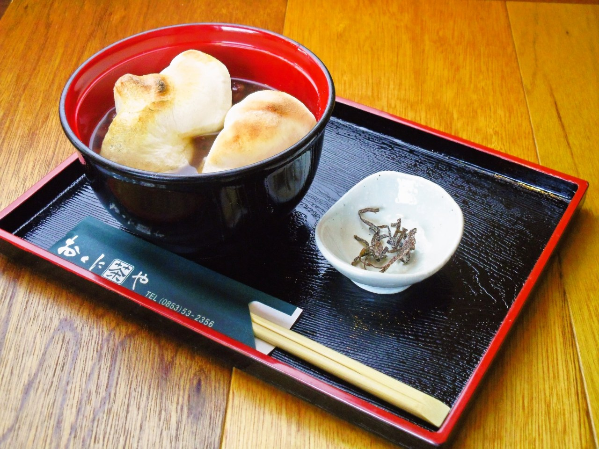
| 営業時間 | 10:30〜17:00(食材が無くなり次第終了) |
|---|---|
| 定休日 | 火曜 |
| 住所 | 島根県出雲市大社町杵築南731 |
| 予約 | 不要 — ☎ 0853-53-2356 |
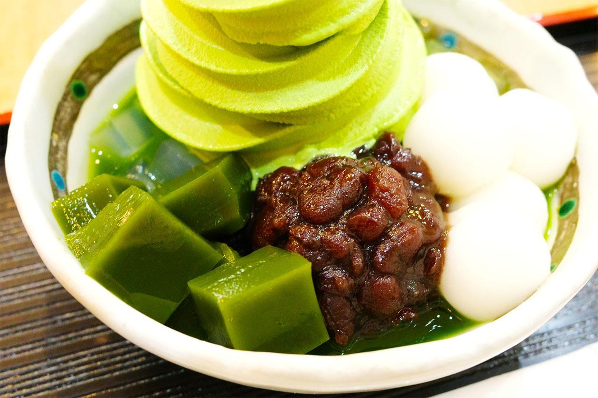
| 営業時間 | 12:00〜18:00(ラストオーダー17:30)※出典により10:00〜19:00の記載もあり、未確認 |
|---|---|
| 定休日 | 火曜 |
| 住所 | 島根県出雲市今市町2076 |
| 予約 | 不要 — ☎ 0853-21-8810 ／ 公式サイト |
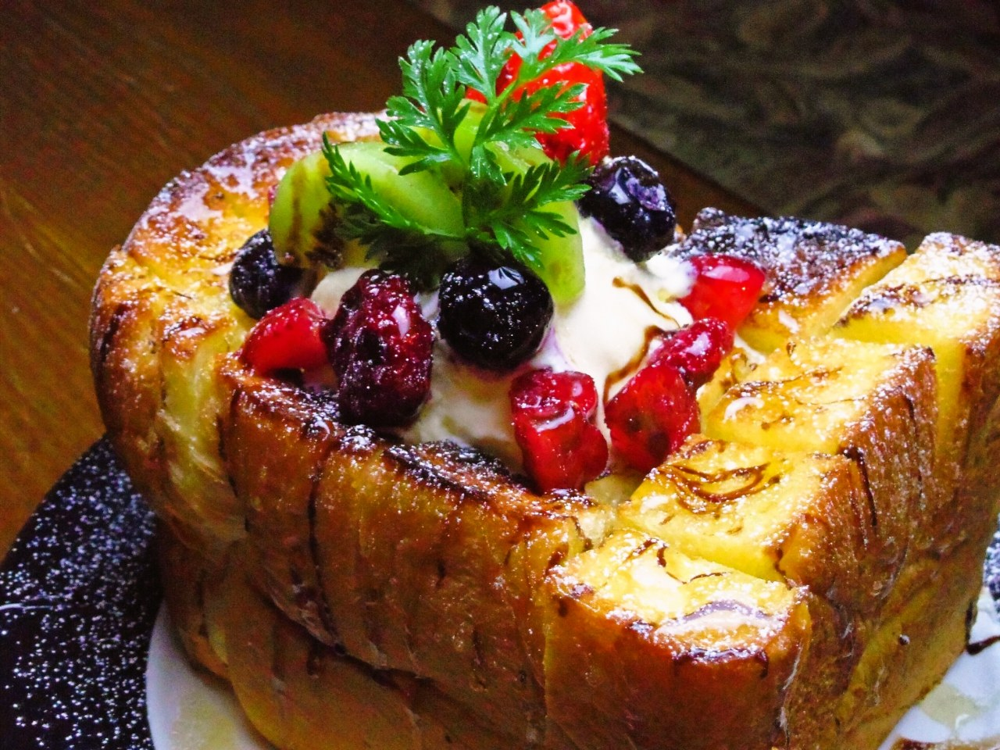
| 営業時間 | 9:00〜18:00(料理ラストオーダー17:30)※金・土は21:00まで |
|---|---|
| 定休日 | 水曜、第2・第4月曜 |
| 住所 | 島根県出雲市今市町中町689 |
| 予約 | 可 |
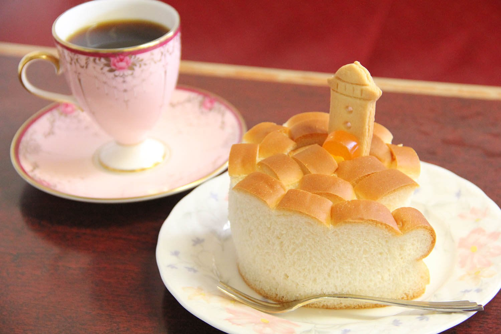
| 営業時間 | 8:00〜19:00 ※星野リゾートの記事では8:00〜18:00。閉店時刻は未確認 |
|---|---|
| 定休日 | 日曜 |
| 住所 | 島根県出雲市渡橋町1223-1 |
| 予約 | 不要 — ☎ 0853-24-1760 ／ 公式サイト |
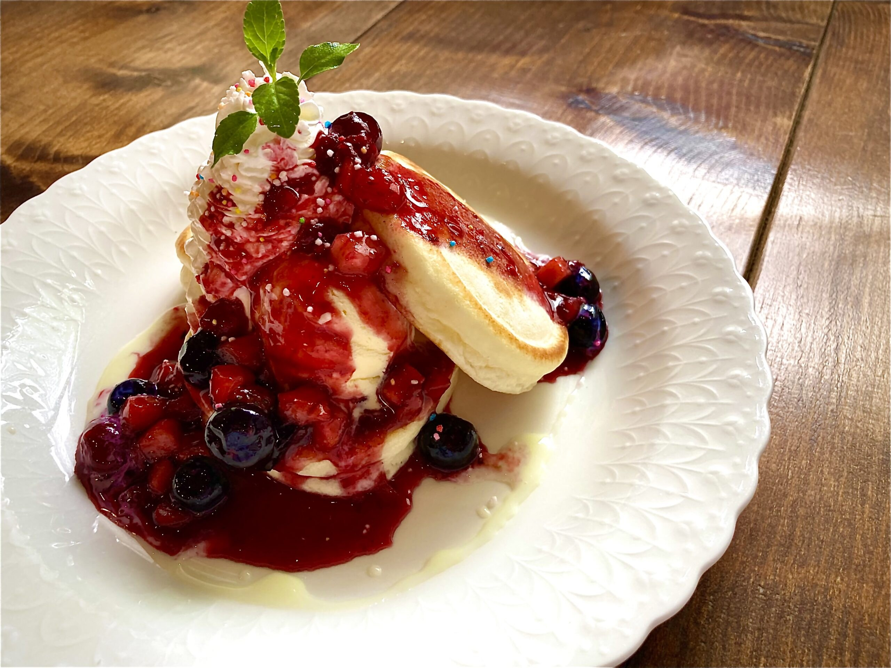
| 営業時間 | 10:30開店／ランチ11:00〜14:00／カフェ10:30〜16:00(ラストオーダー15:30) |
|---|---|
| 定休日 | 月曜・火曜(祝日の場合は営業) |
| 住所 | 島根県出雲市斐川町学頭1264 |
| 予約 | 可 — ☎ 0853-31-7570 ／ 公式サイト |
本ガイドは個人利用目的で作成。掲載情報は2026年10月時点の調査に基づく。写真出典: 各店の公式サイト・公式SNS、および地域情報サイト等の掲載写真（著作権は各サイト・各撮影者に帰属）。引用元は店ごとにカード内へ明記。